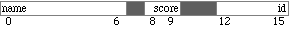
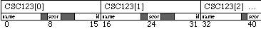

This tutorial illustrates the auto-indexed mode of addressing, the other major form of indirect addressing on the ARM processor. This mode is important for structured data, such as arrays or files of records, and it is also important as a way of manipulating the stack.
Link the files t4.s and t4m.cpp into your project and examine them. First, some notes on t4m.cpp:
16-20: This is a conventional C++ record definition. The fields within this record are arranged as follows:

For example, the "name" field occupies bytes 0 through 6, etc. The gray bytes between fields reflect the alignment of records. Thus, a byte is skipped so that the "score" field will begin on an even byte, and two bytes are skipped so that the id will begin on a location divisible by four.
22-30: The array CSC123[ ] contains seven records. This multi-line declaration sizes the array and initialize its contents at the same time. Together, the array declaration and the structure definition produce a data structure with the layout:

30: The Scores[] array is seven short integers, two bytes each.
The rest of the program is a little different from the other tutorials, in that it asks for no input other than an Enter to proceed. The important part is that it calls CopyScores to copy each score from the CSC123[ ]array to the Scores[ ] array.
The implementation of CopyScores, in t4.s is more interesting. When the function is called, r0 contains N, while registers r1 and r2 point to the beginning of arrays S[ ] and R[ ], respectively.
15: This rather odd instruction causes r2 to point behind the array, to the field R[-1].score. We'll see why--I promise!
16: This load instruction illustrates pre-increment addressing. 16 is added to r2 get the effective address of the object R[0].score, which is loaded into r3. The exclamation point (!) causes the new address to be written back into r2 as a side effect of the instruction. The next time around the loop, the instruction will compute the effective address of R[1].score, and so on. Note that the h prefix in this instruction causes it to load a half-word (16 bits), rather than the default full-word (32) bits.
18: This instruction illustrates post-increment addressing. The value in r3 is stored in the address at r1, without any adjustment. Meanwhile r1 is being updated by adding 2. Thus the value is being stored at the S[0], while the register is updated to point to S[1]. The next time around the loop, the value will store at S[1] while the register moves to S[2], and so on.
Compile and run the program. The output is simply a one-line list of the array Scores, to which the scores were copied from the CSC123 array. Run the gdb debugger on the program, setting a breakpoint at CopyScores. The .gdbinit file has been set up to show values similar to the following:
... 6: x/8xb $r1 0x112f8 <Scores>: 0x00 0x00 0x00 0x00 0x00 0x00 0x00 0x00 5: x/32xb $r2 0x11164 <CSC123>: 0x41 0x6e 0x6e 0x61 0x00 0x00 0x00 0x00 0x1116c <CSC123+8>: 0x5b 0x00 0x00 0x00 0x9c 0x58 0x26 0x15 ...
The array S[ ] to which r1 points is initally zeroed--a behavior which is NOT guaranteed! The first record of R[ ] begins with the ASCII characters 'A', 'n', 'n', and 'a', just as we would expect. Eight bytes from the beginning of the record, we find the value 91 (=0x5b) stored in little-endian order. Stepping forward twice, we subtract 8, then add 16 to r2, while putting the halfword in r3:
... 5: x/32xb $r2 0x1116c <CSC123+8>: 0x5b 0x00 0x00 0x00 0x9c 0x58 0x26 0x15 ... 4: /x $r3 = 0x5b ...The value 0x5b appears to have moved, but if you check the addresses you can verify that the memory location hasn't changed, only the value of r2. Step again, and we should see r3 stored in S[0]--but we don't because r1 no longer points to S[0]. If we continue to step through the loop, we will see r2 advance 1 record at a time, until we continue.
Self-Test
Assignments